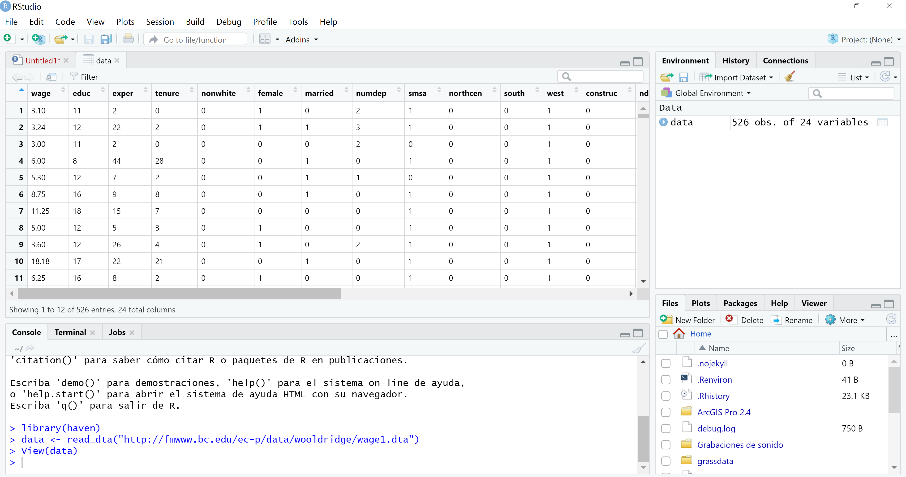

5 Estadísticas descriptivas
Una vez los datos se encuentran cargados es posible empezar el proceso de análisis estadístico de los datos. Una primera función para ver las principales estadísticas descriptivas de una variables es summary. Como ejemplo, utilizamos la base de datos wage1.dta del libro introductorio de Wooldridge4:
library(haven) # Se carga el paquete para leer archivos .dta
data <- read_dta("http://fmwww.bc.edu/ec-p/data/wooldridge/wage1.dta")Cuando los datos estén cargados, en el caso del ejemplo en el objeto data, con la función View es posible ver la tabla de datos y chequear que los datos hayan cargado bien:
View(data)
Con la función colnames es posible ver los nombres de las variables:
## [1] "wage" "educ" "exper" "tenure" "nonwhite" "female"
## [7] "married" "numdep" "smsa" "northcen" "south" "west"
## [13] "construc" "ndurman" "trcommpu" "trade" "services" "profserv"
## [19] "profocc" "clerocc" "servocc" "lwage" "expersq" "tenursq"Para aplicar la función summary a una variable de la base de datos en análisis, es necesario escribir nombre_data$variable. En el ejemplo, calcularemos las estadísticas de los salarios hora (wage):
## Min. 1st Qu. Median Mean 3rd Qu. Max.
## 0.530 3.330 4.650 5.896 6.880 24.980Para ver las estadísticas descriptivas de varias variables, en este caso, de las primeras tres variables dentro de la base de datos, podríamos hacer lo siguiente:
## wage educ exper
## Min. : 0.530 Min. : 0.00 Min. : 1.00
## 1st Qu.: 3.330 1st Qu.:12.00 1st Qu.: 5.00
## Median : 4.650 Median :12.00 Median :13.50
## Mean : 5.896 Mean :12.56 Mean :17.02
## 3rd Qu.: 6.880 3rd Qu.:14.00 3rd Qu.:26.00
## Max. :24.980 Max. :18.00 Max. :51.00Otra forma:
## wage educ exper
## Min. : 0.530 Min. : 0.00 Min. : 1.00
## 1st Qu.: 3.330 1st Qu.:12.00 1st Qu.: 5.00
## Median : 4.650 Median :12.00 Median :13.50
## Mean : 5.896 Mean :12.56 Mean :17.02
## 3rd Qu.: 6.880 3rd Qu.:14.00 3rd Qu.:26.00
## Max. :24.980 Max. :18.00 Max. :51.00Para calcular la media, mediana y desviación estándar:
## [1] 5.896103## [1] 4.65## [1] 3.693086La función table también es muy útil para visualizar estadísticas discriptivas y es más común utilizarla en variable categóricas. Por ejemplo:
##
## 0 2 3 4 5 6 7 8 9 10 11 12 13 14 15 16 17 18
## 2 1 1 3 1 6 4 22 17 30 29 198 39 53 21 68 12 19Con lo anterior, se está mostrando la frecuencia de cada uno de los valores de los niveles educativos. Se observa, por ejemplo, que hay dos individuos que tienen 0 años de educación y 19 individuos tienen 18 años de educación. Ahora, para voltear la tabla y calcular la distribución porcentual y el porcentaje acumulado, se escribe el siguiente código:
cbind("Frec"=table(data$educ), "%"=prop.table(table(data$educ)),
"% Acum"=cumsum(prop.table(table(data$educ))))## Frec % % Acum
## 0 2 0.003802281 0.003802281
## 2 1 0.001901141 0.005703422
## 3 1 0.001901141 0.007604563
## 4 3 0.005703422 0.013307985
## 5 1 0.001901141 0.015209125
## 6 6 0.011406844 0.026615970
## 7 4 0.007604563 0.034220532
## 8 22 0.041825095 0.076045627
## 9 17 0.032319392 0.108365019
## 10 30 0.057034221 0.165399240
## 11 29 0.055133080 0.220532319
## 12 198 0.376425856 0.596958175
## 13 39 0.074144487 0.671102662
## 14 53 0.100760456 0.771863118
## 15 21 0.039923954 0.811787072
## 16 68 0.129277567 0.941064639
## 17 12 0.022813688 0.963878327
## 18 19 0.036121673 1.000000000En la función anterior, entre comillas se encuentran las etiquetas de cada columna: “Frec” representa la frecuencia, “%” es el porcentaje y “% Acum” es el porcentaje acumulado. Se tiene entonces, por ejemplo, que el 37.6% de los individuos en los datos tiene 12 años de educación.
5.1 Función quantile para calcular otros momentos de la distribución
Generemos una variable x de 500 observaciones de 1 a 50:
## Min. 1st Qu. Median Mean 3rd Qu. Max.
## 0.00 12.00 22.00 23.24 34.25 49.00Como podemos notar, hemos introducido dos funciones para simular nuestros datos, de las que no hemos hablado previamente. La función as.integer le indica a R que el tipo de datos deben ser números enteros, por su parte, la función runif nos permite simular datos que tienen una distribución uniforme, sus parámetros min, max, n nos permiten determinar el mínimo, el máximo y el número de observaciones, respectivamente.
La función quantile, sin parámetros nos retorna los cuartiles de la variable. El resultado será:
## 0% 25% 50% 75% 100%
## 0.00 12.00 22.00 34.25 49.00Para calcular los terciles es necesario poner la opción prob = c(0, 1/3, 1), de la siguiente forma:
## 0% 33.33333% 100%
## 0 15 49En la opción prob nos permite introducir el vector o secuencia de cuantiles que deseamos obtener.
En el caso de calcular los deciles en la opción prob pondremos:
## 0% 10% 20% 30% 40% 50% 60% 70% 80% 90% 100%
## 0.0 5.0 9.0 13.0 18.6 22.0 27.0 33.0 37.0 43.0 49.0Aquí se introduce la función seq. Esta función crea un vector secuencial que cumple con las indicaciones dadas por los parámetros. El primer parámetro indica de dónde parte, el segundo, hasta dónde llega y length determinará el número de valores.
Para observar distintos cuantiles solo basta con variar el vector que ingresamos en prob; observemos los percentiles de 5 en 5, es decir los quintiles. Para ello, consideramos un nuevo parámetro by, que determina la distancia entre cada elemento de nuestra secuencia.
## 0% 5% 10% 15% 20% 25% 30% 35% 40% 45% 50% 55% 60%
## 0.00 2.00 5.00 7.00 9.00 12.00 13.00 16.00 18.60 21.00 22.00 25.00 27.00
## 65% 70% 75% 80% 85% 90% 95% 100%
## 30.00 33.00 34.25 37.00 39.00 43.00 47.00 49.00Wooldridge, J. (2013). Introducción a la econometría. 5a edición, Cengage Learning.↩